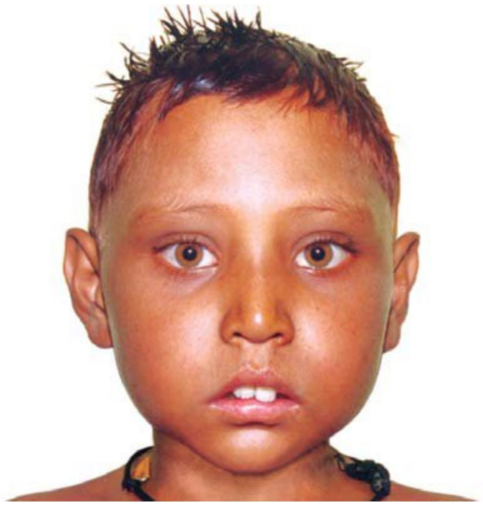
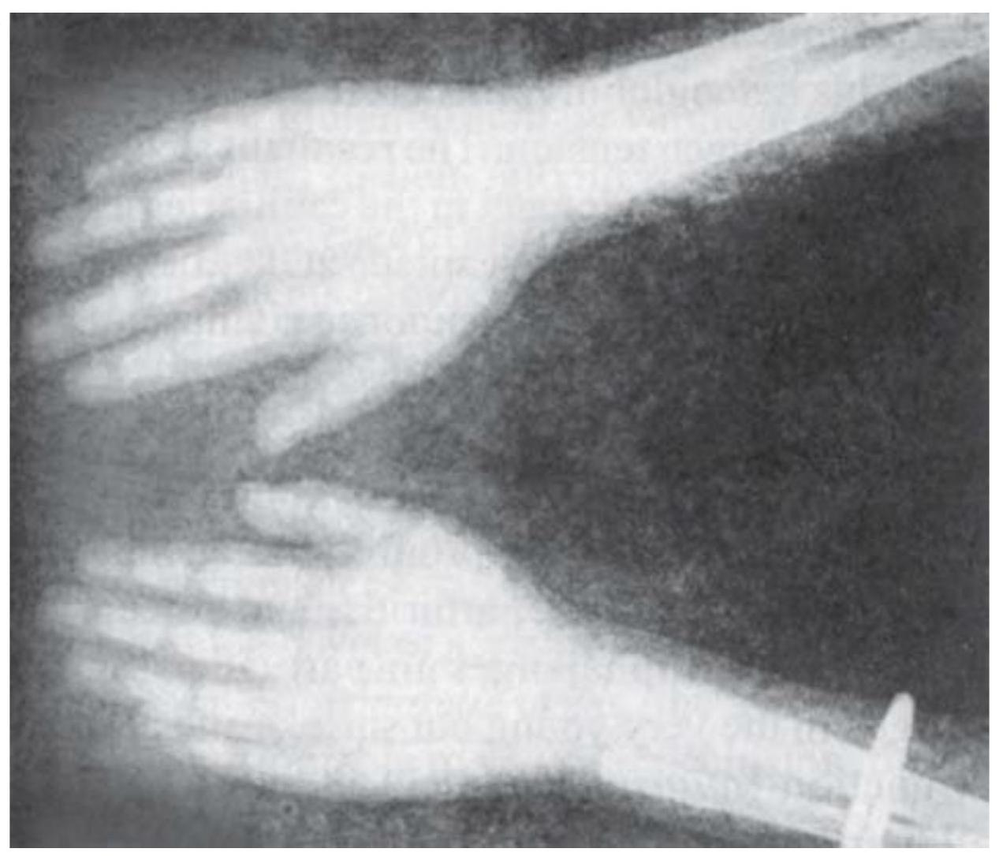

Anemia
Anemia
SYLVIA NANJALA SIMIYU
Classified according to etiology
- a) Decreased production of red blood cells (RBCs) - Iron deficiency anemia and Aplastic anemia
- b) Increased destruction of RBCs - Sickle cell anemia and Thalassemia
- c) Blood loss
Iron deficiency anemia
Most common in childhood.
Caused by poor RBC production
Insufficient body stores of iron lead to
- a. Depleted RBC mass
- b. Decreased hemoglobin concentration (hypochromia)
- c. Decreased oxygen-carrying capacity of the blood. Mostly occurs when the child experiences rapid physical growth, low iron intake, inadequate iron absorption, or loss of blood
Causes of iron deficiency anemia
Blood loss secondary to drug-induced GI bleeding (from anticoagulants, aspirin, or steroids) or due to heavy menses, hemorrhage from trauma, GI ulcers, or cancer
Inadequate dietary intake of iron (less than 1 to 2 $\mathrm{mg}/\mathrm{day}$), which may occur following prolonged un-supplemented breast-feeding or bottlefeeding of infants, or during periods of stress such as rapid growth in children and adolescents
Iron malabsorption, as in chronic diarrhea, partial or total gastrectomy, and malabsorption syndromes, such as celiac disease and pernicious anemia.
Intravascular hemolysis-induced hemoglobinuria or paroxysmal nocturnal hemoglobinuria
Mechanical erythrocyte trauma caused by a prosthetic heart valve or vena cava filters
Pathophysiology of iron deficiency anemia
In all children, iron is usually absorbed in the small intestines. Then it is passed to the blood stream, or, it is stored as ferritin in the intestinal epithelial cells.
The iron in the intestinal cells is lost through sloughing off of epithelial cells.
Iron in blood stream binds to iron transport molecule, transferrin.
When an adolescent does not consume enough dietary iron the normal process of obtaining iron for hemoglobin synthesis is impaired , since there isn't enough iron absorbed by small intestines
When blood loss occurs there are less RBCs to be catabolized.
Consequently the Fe in these cells cannot be recycled for future use
Signs and symptoms of iron deficiency anemia
- Dyspnea on exertion
- Fatigue
- Headache
- Inability to concentrate
- Irritability
- Listlessness/ lethargic
- Pallor
- Susceptibility to infection
- Tachycardia
Signs and symptoms of chronic iron deficiency anemia
- Dysphagia
- Neuralgic pain
- Numbness and tingling of the extremities
- Smooth tongue
- Spoon-shaped, brittle nails
- Vasomotor disturbances
- Cracks in corners of the mouth
Diagnostic Findings of Iron deficiency anemia
Bone marrow studies reveal depleted or absent iron stores and normoblastic hyperplasia.
Hb , hematocrit, and serum ferritin levels are low.
Mean corpuscular Hb is decreased in severe anemia.
RBC count is low, with microcytic and hypochromic cells. (In early stages, RBC count may be normal, except in infants and children.)
Serum iron levels are low, with high binding capacity.
Treatment for iron deficiency anemia
If the $\mathrm{Hb}<5 \mathrm{~g} / \mathrm{dl}$ transfuse $20 \mathrm{mls}/\mathrm{kg}$ whole blood urgently, give over 4 hrs
Increased iron intake (for children and adolescents)by adding foods rich in iron to diet or (for infants) adding iron supplements
Treatment for any underlying condition
Oral preparation of iron or a combination of iron and ascorbic acid (which enhances iron absorption)
Cyanocobalamin (vitamin B12 ) if intrinsic factor is lacking give Folic acid 2.5 mg alternate days
Iron dextran (InFeD) if additional therapy is needed
Nursing Interventions and Rationales
Carefully collect data on the child's drug history. Certain drugs, such as pancreatic enzymes and vitamin E, may interfere with iron metabolism and absorption and other drugs, such as aspirin and steroids, may cause GI bleeding.
Provide passive stimulation; allow frequent rest periods; give small, frequent feedings; and elevate the head of the bed to decrease oxygen demands
Educate about proper hand washing to decrease risk of infection.
Provide foods high in iron (liver, dark leafy vegetables, and whole grains) to replenish iron stores.
Administer iron before meals with citrus juice. Iron is best absorbed in an acidic environment.
Give liquid iron through a straw to prevent staining the child's skin and teeth. For infants, administer by oral syringe toward the back of the mouth.
Don't give iron with milk products. Milk products may interfere with absorption of iron.
Be supportive of the family and keep them informed of the child's status to decrease anxiety
Educate the family to keep iron supplements safely stored out of the child's reach at home, brush the children's teeth after iron administration and report reactions to iron supplementation, such as nausea, vomiting, diarrhea, constipation, fever, or severe stomach pain, which may require a dosage adjustment
Aplastic anemia
Bone marrow depression causing involvement of all blood elements.
Aka pancytopenia
Types:
Congenital aplastic anemia- may be present with other congenital anomalies
Acquired aplastic anemia- due viral, bacterial or parasitic infections (HIV, Hepatitis B, EBV),
leukemia, osteoporosis, irradiation from chemicals or immune mediated stem loss.
Treatment for aplastic anemia
Stopping exposure to the possible cause
Giving frequent blood transfusions
Administering androgenic anabolic steroids as such or together with corticosteroids.
Antibiotic cover is recommended.
For severe or very severe aplastic anemia(neutrophil count of less than 200 mm3 - do allogeneic bone marrow transplantation (BMT)
Sickle cell anemia
Occurs when there is a defect in the Hb molecule that changes the oxygen-carrying capacity and shape of RBCs
The altered Hb molecule is referred to as Hb S .
The RBCs acquire a sickle shape.
Child may experience sickle cell crises, which may be triggered or intensified by dehydration, deoxygenation and acidosis
Cause of sickle cell anemia
Genetic inheritance (sickle cell anemia is an autosomal recessive trait; the child inherits the gene that produces Hb S from two healthy parents who carry the defective gene)
S & S of sickle cell anemia
Symptoms are rare before 4 months of lifebecause fetal hemoglobin prevents excessive sickling
S & S in infants
- Colic from pain caused by an abdominal infarction,
- Dactylitis or hand-foot syndrome from infarction of the small bones of the hands and feet
- Splenomegaly from sequestered RBCs
S & S in toddlers and preschoolers
- Hypovolemia and shock from sequestration of large amounts of blood in spleen
- Pain at site of vaso-occlusive crisis
S & S in school aged children and adolescents
- Delayed growth and development and delayed sexual maturity
- Enuresis
- Extreme pain at site of crisis
- History of pneumococcal pneumonia another infections due to atrophied spleen
- Poor healing of leg wounds from inadequate peripheral circulation of oxygenated blood
Lab and diagnostic finding in Sickle Cell Anemia
Laboratory studies show Hb level is 6 to $9 \mathrm{~g} / \mathrm{dl}$ (in a toddler).
More than $50 \% \mathrm{Hb}$ S indicates sickle cell disease; a lower level of Hb S indicates sickle cell trait.
RBCs are crescent-shaped and prone to agglutination.
Treatment for sickle cell anemia
Bed rest
Hydration with oral or I.V. fluid (may be increased to 3 L/day during crisis)
Short-term oxygen therapy (long-term oxygen decreases bone marrow activity, further aggravating anemia)
Transfusion therapy as necessary
Treatment for acidosis as necessary
Drug: Analgesic(morphine or hydromorphone), Hydroxyurea
Nursing: Describe the nursing management
Patient and family education
- Avoiding activities that promote a crisis, such as excessive exercise, mountain climbing, or deep sea diving
- Avoiding high altitudes
- Seeking early treatment of illness to prevent dehydration
- Avoiding aspirin use, which enhances acidosis and promotes sickling
Thalassemia
Hereditary hemolytic anemia with characteristic frog -like or mongoloid facies, skeletal changes and splenomegaly as first described by Cooley in 1925
Basic defect is a hereditary inability to produce beta-chains (normal adult hemoglobin, Hb-A) which results in erythrocytes that are thin and have short lifespan.
The result is hemolytic anemia with characteristic changes in blood and various organs.
The body then compensates by increased production of fetal hemoglobin (Hb-F).
In the peripheral blood, a large number of normoblasts, target cell and microcytic hypochromic erythrocytes are present.
Reticulocyte count is increased.
Thalassemia clinical features
Symptoms start manifesting from about 3 months of age with
- Progressive pallor
- Growth failure
- Jaundice of varying degree
- Enlargement of liver and spleen.
- Recurrent respiratory infections are common.
- Lymphadenopathy may be present.
- Physical retardation of growth may be accompanied by hypogonadism.
The facial appearance is characteristic with frontal bossing, prominent maxilla (exposing the teeth), depressed bridge of nose, and malocclusion of teeth
This appearance is often referred to as thalassemia or hemolytic facies.
Hemolytic facies of thalassemia
Increased pigmentation of the skin due to high level of melanin in the epithelium and hemosiderin in the dermis may occur
By adolescence, subject develops significant cardiomyopathy due to chronic anemia and progressive myocardial iron deposition as a result of increased iron turnover.
Dysarrhythmias, atrioventricular blocks and other conduction disorders, pericarditis and even cardiac temponade, CCF and ECG repolarization abnormalities may be encountered
Diagnosis of thalassemia
Blood picture shows a microcytic hypochromic anemia (usually the hemoglobin between 4 to $9 \mathrm{~g} / \mathrm{dl}$ range)
Bone marrow shows erythroid hyperplasia
Fetal hemoglobin, measured by electrophoresis, exceeds 40\% of the total*.
Radiologic findings include thinning of the cortex, widening of the medulla (due to marrow hyperplasia) and coarsening of trabeculations in the long bones, metacarpals and metatarsals
Skull shows the "hair-on-end" appearance due to vertical striations from widening of the diploic space and atrophy of the outer table of the skull
Thalasemmia
X-ray hand and forearm showing thinning of the cortex and coarsening of trabeculae in thalassemia major
Treatment of thalassemia
Allogeneic bone marrow transplant using a matched sibling donor is currently the curative treatment- though expensive
Transfusion-chelation therapy-
Blood transfusion every 3-5 weeks maintaining HB between $9-11 \mathrm{~g} / \mathrm{dl}$
Desferrioxamine- most effective iron chelator available
Folic acid supplementation
Human recombinant erythropoietin may improve HB in beta thalassemia
Chemotherapeutic agents- hydroxyurea, butyrate salts, can be used to stimulate gammaglobulin chain synthesis
Splenectomy in hypersplenism in children needing very frequent blood transfusions
Gene therapy- insertion of normal gene with stem cells of receipient
Prognosis of thalassemia
Prognosis is related to treatment in the form of high transfusion program DFX (desferrioxamine) therapy
This therapy may also be responsible for hepatitis (preventable by hepatitis vaccine), failure of puberty attainment and hypoparathyroidism
Prevention and counseling
Screening for thalassemia carrier is possible using NESTROF (naked eye single tube red cell osmotic fragility) test or various red cell indices (MCV, RBC count, Mentzer index, RDW etc).
Confirmation of carrier status comes from demonstration of elevated HbA2 on electrophoresis. There are 1 in 4 chances of the disease in the offspring if both parents are carrier.
Antenatal diagnosis by fetoscopy at 18 to 20 weeks, amniocentesis at 17 weeks or chorionic villous sampling during first trimester, the later being the procedure of choice currently.
Pernicious anemia
This is a type of anemia that occurs due to absence of intrinsic factor.
Intrinsic factor is normally secreted by cells with gastric mucosa
It then binds with dietary vitamin B12 and travels with it to the ileum, where the it is absorbed.
Without intrinsic factor, orally consumed vitamin B12 cannot be absorbed, and erythrocyte production is eventually diminished.
Even if adequate vitamin B12 and intrinsic factor are present, a deficiency may occur if disease involving the ileum or pancreas impairs absorption
The body normally has large stores of vitamin B12, so years may pass before the deficiency results in anemia.
Since the body compensates so well, the anemia can be severe before the patient becomes symptomatic.
Patients with pernicious anemia have a higher incidence of gastric cancer than the general population; these patients should have endoscopies at regular intervals (every 1 to 2 years) to screen for early gastric cancer
Clinical features of pernicious anemia
- Weakness, listlessness, fatigue
Patients with pernicious anemia develop a smooth, sore, red tongue and mild diarrhea.
They are extremely pale, particularly in the mucous membranes
Confused
They have paresthesias in the extremities (particularly numbness and tingling in the feet and lower legs).
Difficulty maintaining balance because of damage to the spinal cord.
They also lose position sense (proprioception
DIAGNOSIS OF PERNICIOUS ANEMIA
Schilling test, in which the patient receives a small oral dose of radioactive vitamin B12, followed in a few hours by a large, nonradioactive parenteral dose of vitamin B12 (this aids in renal excretion of the radioactive dose)
If the oral vitamin is absorbed, more than $8 \%$ is excreted in the urine within 24 hours; therefore, if no radioactivity is present in the urine (ie, the radioactive vitamin B12 stays within the GI tract), the cause is GI malabsorption of the vitamin B12.
Conversely, if radioactivity is detected in the urine, the cause of the deficiency is not ileal disease or pernicious anemia.
Treatment of pernicious anemia
Vitamin B12 replacement.
Vegetarians can prevent or treat deficiency with oral supplements with vitamins or fortified soy milk.
If deficiency is due to the more common defect in absorption or the absence of intrinsic factor, replacement is by monthly IM injections of vitamin B12.